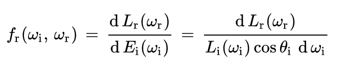
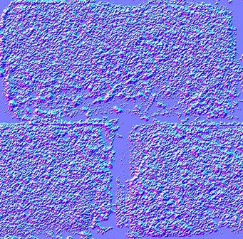
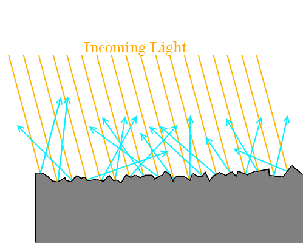

Geometry and Rendering Concepts
Reflective aspect of modelling
What is a BRDF?
A BRDF is a function that defines the amount of light reflected in the view direction for a given incident and outgoing light direction. These directions are taken in a co-ordinate system where the surface normal (n) acts as the z-axis.
The BRDF formal definition is as follows:
Equation variables
- L is the radiance (power from the source per area into a certain solid angle)
- E is the irradiance (power recieved by a surface per unit area)
- thetai is the angle between wi and

image source : https://en.wikipedia.org/wiki/Bidirectional_reflectance_distribution_function#/media/File:BRDF_Diagram.svg
Many rendering models like Cook-Torrance, are examples of BRDFs. Many BRDFs have been proposed other the years: some are designed to model a specific type of material. For example the Oren-Nayar model is suited to model the surface of the moon, which does not reflect light like a diffuse surface would. (diffuse surfaces scatter light at many angle when incident with one ray).
BRDF's have 3 key properties:
- BRDF is a positive function, meaning that for all define inputs of the function, the output is positive.
- BRDF is reciprocal. In other words, BRDF(ωi,ωr)=BRDF(ωr,ωi) if you swap the incoming and outgoing direction in the function, the function returns the same result.
- Finally, a BRDF is energy conserving. This means that the BRDF can not create more light than it receives. This is because an object cannot reflect more light than the amount of light incident on its surface. (unless the surface is emissive, which is an exception)
What is a normal map?
In geometry, the normal is a vector or that’s perpendicular to a surface or an object. Normal map creates the illusion of depth detail on the surface of a model. A normal map uses RGB information that corresponds directly with the X, Y and Z axis in 3D space (R for X , G for Y and B for Z). This RGB information tells the 3D redenering applications how the direction of the surface normals are oriented in for every polygon in the image. These orientations, also known as normals, tell the 3D applications how the polygon should be shaded.
While normal maps cannot represent extremely irregular geometry, they are capable of rendering small indents and bumps along a flat surface. Hence, it would be suitable for rendering scratched metals. Normal maps do not add any real geometry, but they use the colors to create highlights and shadows that would be present if there were more geometry.
image source : http://www.opengl-tutorial.org/intermediate-tutorials/tutorial-13-normal-mapping/
Introduction to microfacets
Specular: light is perfectly reflected in a mirror-like way from the light source to the viewer. This occurs when the surface normal is oriented exactly halfway between the direction of incident light and the direction of the viewer.
Specular highlights: bright spot of light that appears on shiny objects when illuminated
However, many shiny objects show blurred specular highlights. This can be explained by the existence of microfacets. We assume that surfaces contain many tiny facets and are not perfectly smooth. There are many microfacet models which have been very successful at modelling light reflection from rough surfaces. (Eg. Cook-Torrence model)
image source : http://glasnost.itcarlow.ie/~powerk/GeneralGraphicsNotes/LightingShadingandColour/lighting.html
Modelling the microgeometry of scratches
Groove and peaks are the main features of a scratch. These features can be modelled using the shape of the scratcher. In order to deduce the depth of the scratch, we can used a derived function that relates the depth of penetration p, with the applied force f, and the hardness of the material m. (This equation assumes that no material is loss during the scratch process)